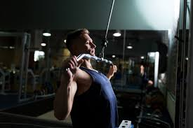

LAT PULLDOWN MACHINE
The lat pulldown is an upper-body exercise that focuses on the muscles of your back. Much like the squat and bench press, it’s considered a compound exercise — meaning that it targets many muscles at once. Besides increasing your back’s strength, the lat pulldown can also promote good posture and stability.
Read More
